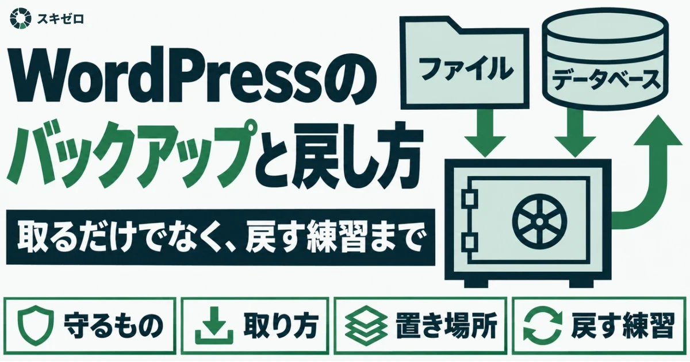
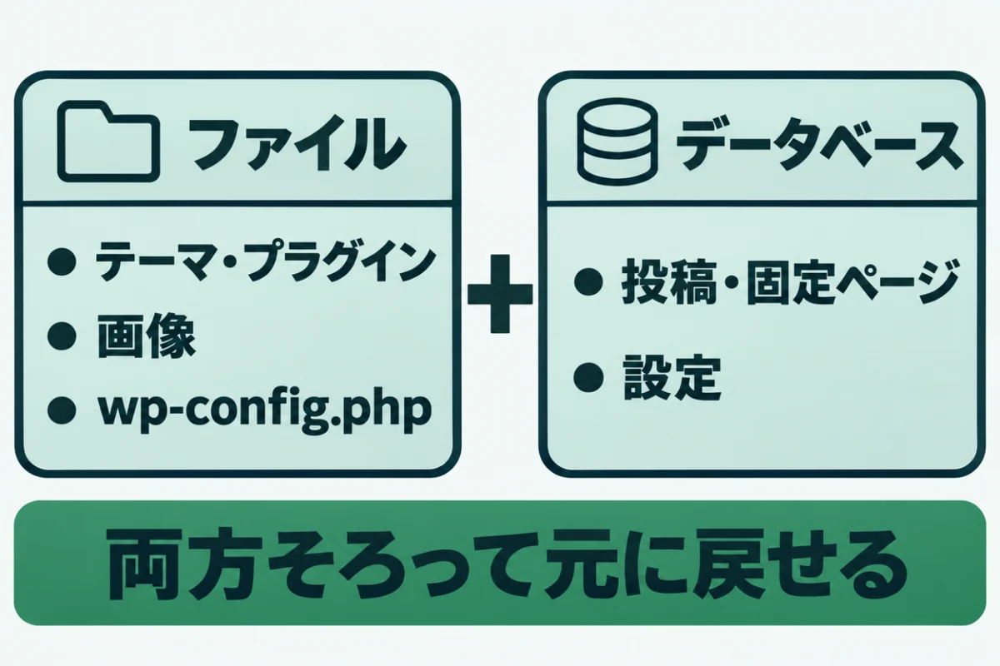
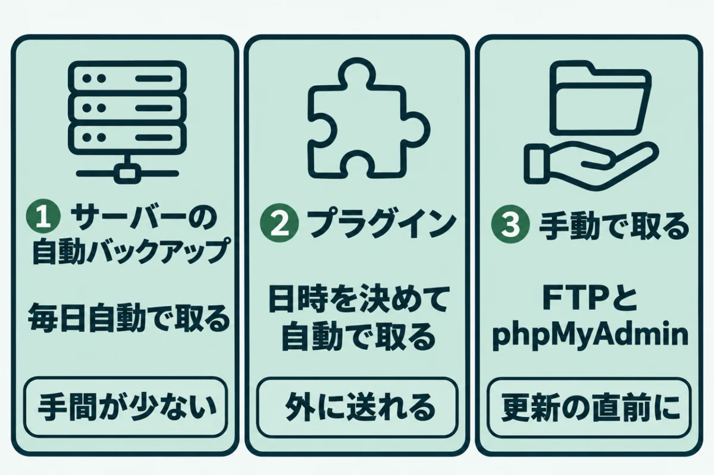
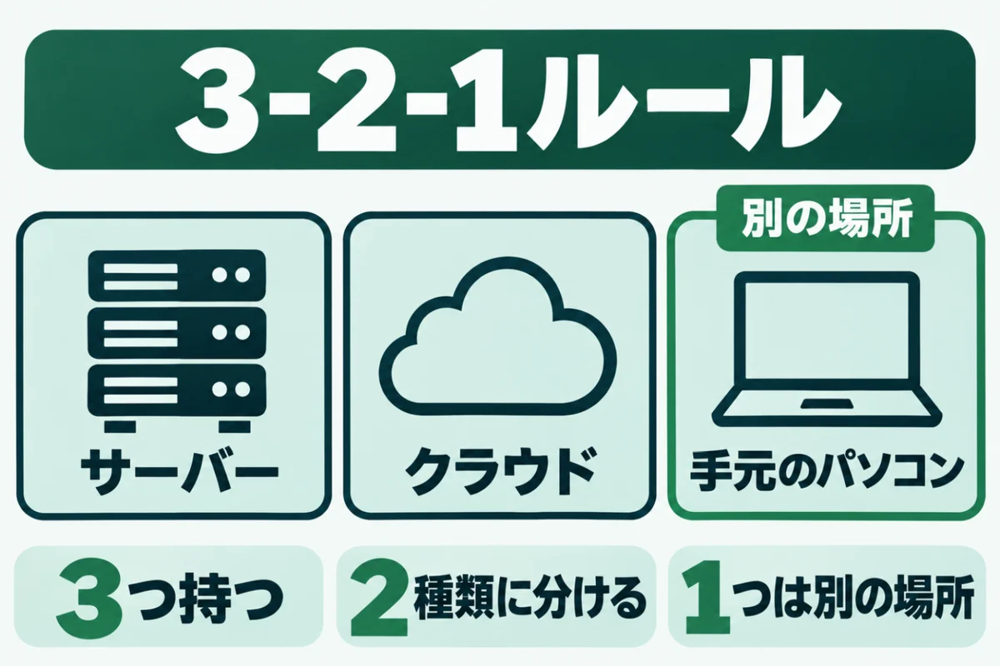
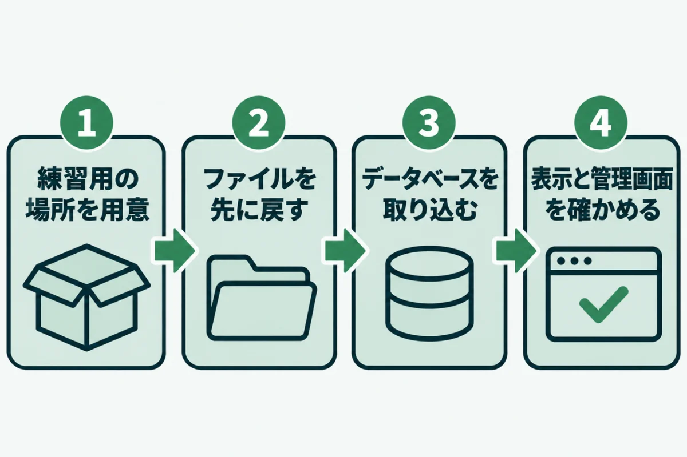
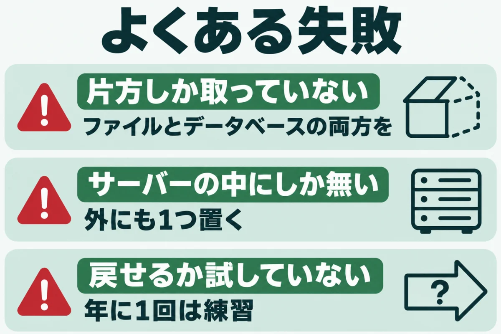

WordPressのバックアップの取り方と、戻す練習のしかたファイルとデータベースの両方を守る

「バックアップは取っているはずなのに、本当に戻せるのか分からない」と不安に感じていませんか？
バックアップは、取っただけでは安心できません。いざというときに戻せなければ、改ざんや更新の失敗からサイトを立て直せないからです。
この記事では、WordPressのバックアップの取り方を、守るべきものから順に紹介します。取ったバックアップで戻す練習をするやり方と、よくある失敗もまとめました。
WordPressの公式ハンドブック、エックスサーバーのマニュアル、IPAの資料をもとにしています。運営者の自社サイトで確かめたこともあわせて書きました。
WordPressのバックアップで守るべき2つのもの

WordPressのバックアップは、ファイルとデータベースの2つに分けて考えます。WordPressの公式ハンドブックも、サイトを元どおりに戻すには両方が必要だと書いているほどです。
片方だけでは、文章が残っても画像が消えることがあります。見た目は戻っても、記事が空になる場合もあるのです。まずは、それぞれに何が入っているかを押さえておきましょう。
① ファイルに入っているもの
ファイルには、テーマやプラグイン、記事に載せた画像などが入っています。データベースにつなぐための設定を書いたwp-config.phpも、ファイルの側です。公式ハンドブックによると、これらはデータベースのバックアップには含まれません。画像やテーマを守れるのはファイルの控えだけなのです。レンタルサーバーでは、公開用のフォルダの中身をまるごと控えるのが基本の形になります。フォルダの一部だけを写すと、戻したときに足りないファイルが出てしまうでしょう。
② データベースに入っているもの
データベースには、投稿や固定ページの文章、コメント、サイトの設定などが入っています。毎日の更新で中身が変わるのは、主にこちらの側です。公式ハンドブックは、データベースは定期的に、更新の前には必ず控えるよう勧めています。お問い合わせの記録をサイトに残すプラグインを使っていれば、その記録もデータベースに入る形です。ファイルと違って画面では見えにくいため、取り忘れが起きやすいでしょう。
WordPressのバックアップを取る3つの方法

WordPressのバックアップを取る方法は、大きく分けて3つあります。サーバーの機能に任せる方法、プラグインで取る方法、自分の手で取る方法の3つです。
どれか1つに絞る必要はありません。手間の少ない方法を土台にして、別の方法で控えを足しておくと安心です。順に、向いている場面と注意点を見ていきましょう。
① サーバーの自動バックアップを使う
多くのレンタルサーバーには、毎日自動でバックアップを取る機能があります。エックスサーバーでは、ファイルとデータベースを過去14日分まで残す仕組みです。ただし、一部の古いサーバーは7日分で、運営者の自社サイトもファイルは7日分でした。自分のサーバーの保存日数を一度確かめることをおすすめします。改ざんに気づくのが遅れると、きれいな控えがすでに消えていることもあるでしょう。保存の日数は、サーバーパネルの画面で確かめられます。
② プラグインで取る
WordPressには、バックアップを取るためのプラグインが公式の配布ページに複数あります。日時を決めて自動で取り、外部のクラウドに送れるものが多いのが特徴です。取る対象にファイルとデータベースの両方が入っているかも、設定の画面で確かめてください。サーバーの外に控えを置けるので、サーバーそのものの不具合にも備えられます。送り先をサーバーの外にしておくのが、プラグインを使う一番の意味です。入れたあとは、本当に控えが届いているかを一度見ておきましょう。
③ 手動で取る
手動で取るときは、ファイルとデータベースを別々に控えます。ファイルは、FTPのソフトで公開用のフォルダをまるごと手元に写すのが基本です。データベースは、phpMyAdminで書き出して保存しましょう。公式ハンドブックでは、「エクスポート」のタブで形式をSQLにして保存する手順が紹介されています。プラグインの更新やPHPの切り替えの直前に取る控えに向いた方法です。少し手間はかかりますが、仕組みを知る練習にもなるでしょう。
- 参考：Backing Up Your Database｜Advanced Administration Handbook｜WordPress.org
- 参考：自動バックアップからのデータ復元｜エックスサーバー
WordPressのバックアップを取る頻度と保管場所

WordPressのバックアップは、いつ取るかとどこに置くかで役に立つかどうかが決まります。取る間隔が空きすぎると、戻したときに失う更新が増えるからです。
置き場所も同じくらい大切になります。バックアップがサーバーの中にしかなければ、サーバーごと被害を受けたときに一緒に失われるでしょう。頻度と置き場所の目安を、公式の資料から紹介します。
取る頻度の目安
公式ハンドブックの目安は、更新の少ないサイトなら週に1回、投稿の多いサイトなら毎日です。会社のサイトなら、毎日の自動バックアップに週1回の手動の控えを足す形が現実的でしょう。本体やプラグインを更新する前にも1回取ると、失敗したときにすぐ戻せます。新しい控えを3〜5個は手元に残すことも、公式ハンドブックが勧める点です。古い控えから順に入れ替えていけば足ります。控えのファイル名には取った日付を入れておきましょう。
3-2-1ルールで置き場所を分ける
IPAは、重要なデータのバックアップに「3-2-1ルール」を勧めています。データを本体も含めて3つ持ち、2種類の媒体に分け、1つは別の場所に置くという考え方です。WordPressなら、サーバー、クラウド、手元のパソコンの3か所に分ける形が分かりやすいでしょう。IPAは、バックアップに使う機器をバックアップのときだけつなぐことも勧めています。ふだんからつないだままだと、被害が控えにまで広がるおそれがあるためです。
WordPressのバックアップから戻す練習のしかた

WordPressのバックアップは、一度戻してみて初めて使えると分かります。IPAの情報セキュリティ6か条にも、戻せるかを定期的に確かめるという項目があるほどです。
ただし、練習で本番のサイトに上書きするのは避けてください。本番とは別の場所を用意して、そこへ戻す流れを試しましょう。年に1〜2回、時期を決めて行うと忘れにくくなります。
本番とは別の場所に戻してみる
練習には、本番とは別のサブドメインやフォルダを用意しましょう。データベースも、本番とは別に空のものを1つ作っておきます。公式ハンドブックの順番どおり、先にファイルを戻し、そのあとデータベースを取り込む流れです。取り込み先のデータベースは空にしておくのが、phpMyAdminで取り込むときの決まりになります。住所が本番と違うので、wp-config.phpやサイトの住所の設定を書き換える作業も欠かせません。
戻せたかを確かめる項目
戻したサイトが開けたら、トップページと主な記事の表示、画像が出ているかを確かめます。お問い合わせフォームは、送信までは試さず表示だけを見れば十分です。管理画面に入れるかと、プラグインの設定が残っているかも見ておきましょう。どの日の控えから戻したかを記録しておくと、本番で使うときに迷いません。かかった時間も書き残しておけば、本当に困ったときの見通しが立ちます。練習が終わったら、練習用の場所とデータベースは消しておくのが安全です。残したままにすると、古いWordPressが外から見える状態になってしまいます。
WordPressのバックアップでよくある失敗

WordPressのバックアップは、取っているつもりで戻せないという形の失敗が多く見られます。いざ使う段になって気づくので、そのときにはもう手遅れになりがちです。
取っているつもりのサイトで起こりやすいものを、3つ紹介します。どれも、今日から見直せることばかりです。自分のサイトに当てはまらないか、1つずつ確かめてください。
ファイルかデータベースの片方しかない
プラグインの設定によっては、データベースだけを控えていることがあります。この場合、記事の文章は戻っても、画像やテーマは戻りません。反対に、FTPでファイルだけを写していて、データベースを書き出していない例もあります。控えの中身を開いて両方あるかを見るだけで、この失敗は防げるのです。ファイルの束とSQLのファイルの2つがそろっているかを確かめてください。プラグインの設定を変えたあとも、同じように見直しましょう。
サーバーの中にしか置いていない
サーバーの自動バックアップだけに頼っていると、保存の日数を過ぎた控えは消えていきます。エックスサーバーのマニュアルも、自動の控えの完全性は保証しないという立場です。改ざんに2週間以上気づかない場合、きれいな状態の控えが1つも残らないこともあるでしょう。月に1回は手動で控えを取り、サーバーの外に置いておくと安心です。古い控えを1つ残しておけば、さかのぼって戻すこともできるでしょう。
戻せるか一度も試していない
バックアップを取り続けていても、戻す手順を知らなければ、困ったときに手が止まります。自動の控えが正しく取れているかは、実際に戻してみるまで分からないのです。公式ハンドブックも、自動の控えに任せきりにせず、時々は手動でも取るよう勧めています。年に1回でも戻す練習をしておくと、本番で慌てずに済むでしょう。改ざんされたときの流れは、ホームページ改ざんの復旧手順｜発見から再発防止までで紹介しました。
URLを入れるだけで、PHPやWordPressの版、プラグインなど8項目を無料で判定します。登録はいりません。
無料で診断するWordPressのバックアップに関するよくある質問
サーバーの自動バックアップがあれば、自分で取らなくていいですか？
自動バックアップは心強い機能ですが、それだけに頼るのはおすすめしません。保存の日数を過ぎると古い控えは消えますし、サーバーごと被害を受ける場合もあります。自動の控えに加えて、月に1回ほど手動の控えをサーバーの外に置いておきましょう。更新の前に取る1回も忘れずに行ってください。PHPの切り替えの前も同じです。
バックアップのプラグインは何を選べばいいですか？
WordPressの公式の配布ページにあり、最近も更新が続いているものを選ぶのが基本です。ファイルとデータベースの両方を取れること、外部のクラウドに送れることも確かめましょう。入れたら一度控えを取り、送り先に届いているかを見てください。使わなくなったプラグインは、停止だけでなく削除しておくと安全です。
バックアップから戻すのは自分でもできますか？
サーバーの自動バックアップからなら、管理画面のボタンで戻せる場合が多いでしょう。エックスサーバーでも、サーバーパネルから日付を選んで戻せる仕組みです。ただし、戻すと今のファイルは上書きされ、控えの日より後に作ったファイルは消えます。不安なときは、制作会社や保守を頼んでいる会社に相談してください。戻す前に、今の状態の控えを取っておくと安心です。
バックアップは何世代残しておけばいいですか？
WordPressの公式ハンドブックは、新しい控えを3〜5個は残しておくよう勧めています。改ざんは気づくまでに時間がかかることがあるので、1か月ほど前の控えもあると安心です。古い控えは容量を取るので、決まった数を超えたら古い順に消していきましょう。手動の控えには、取った日付をファイル名に入れておくと探しやすくなります。
制作会社に頼んでいる場合は、何を確かめればいいですか？
まず、誰がどの頻度でバックアップを取っているかを確かめてください。控えがどこに置かれていて、何日分残るのかも聞いておくと安心です。戻す作業が保守契約の範囲に入っているかも大切な確認点になります。確かめ方は、次の記事にまとめました。制作会社に任せたホームページ、保守契約で確認したいこと｜5つの項目と見直しの手順が参考になります。
まとめ
WordPressのバックアップは、ファイルとデータベースの両方を取って初めて役に立ちます。サーバーの自動バックアップに加えて、更新の前と月に1回は手動で控えを取りましょう。
控えは3-2-1ルールで置き場所を分け、年に1回は別の場所に戻して練習することをおすすめします。戻せると分かっていれば、いざというときも落ち着いて動けるはずです。
まずは、今の状態を知るところから。
URLを入れるだけで、数十秒で判定が出ます。登録はいりません。